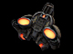

Infiltrator
Role
Deploys PSI-Radar to reveal enemy units, completes Hack objectives and hacks enemy deployables with the Hacking Tool, uses the Flyer Drone to spy on and ambush the enemy, and the Teleporter to access sniper vantage points. Can steal enemy identities , disable enemy vehicles and deployables with the scrambler grenade, and backstab with the Spikes.
Specialty
Sniper, Disguise and Hacker
Objective
 Hacking
Hacking
 Flyer Drone Attack
Flyer Drone Attack
Weapons
Equipment
- Scrambler Grenade
- Hacking Tool
- Deploy Tool
- Flyer Drone
- Teleporter
Deployables
Instructional info
Scrambler Grenade:
Scrambler Grenade is used to temporarily disable enemy vehicles and deployables. With Alt-Fire the scrambler grenade can be thrown and it will stick to walls and vehicles. It will also do some damage to infantry.
 Hacking Tool:
Hacking Tool:
Only Strogg Infiltrator can hack GDF deployables, disabling them for 60 seconds. The Infiltrator hacks objectives and GDF deployables by approaching the target and holding the Use Key ("Default F") when the hack icon appears. Continue to hold the Use Key ("Default F") until the target is  fully hacked. Deployables can only be hacked temporarily before they are reactivated.
fully hacked. Deployables can only be hacked temporarily before they are reactivated.

PSI Radar Deploy tool:
To place a PSI radar select the Deploy Tool from the weapon menu and press the "Mouse 1" button to activate the Deploy Tool. The camera will now pull into third person view and a colored wireframe outline of radar deployable should be visible. If the deployable grid is red or yellow it means the PSI radar cannot  be placed in this location, move around the map and find a location where the placement grid is green. Once a green deploy location has been located press the "Mouse 1" button to deploy.
be placed in this location, move around the map and find a location where the placement grid is green. Once a green deploy location has been located press the "Mouse 1" button to deploy.
Remember: You can only deploy deployables in friendly territory.
Flyer Drone:
To use the Flyer Drone equip it from the weapon menu and press fire to activate it. The camera will now be looking from the Drones view and you will be able to see yourself from the Drones perspective. Fly the small drone with your movement keys into an enemy location and detonate the Drone by pressing fire once as close as possible to an infantry target. The Drone is ideal for killing enemy classes who are attempting to complete objectives or difficult to kill infantry taking cover behind barriers.
Teleporter:
The Infiltrator's Teleporter allows you to instantly escape trouble, or access high vantage points. To use the Teleporter equip the Teleporter pistol from the weapons menu and press fire to place the beacon, now press fire again to automatically teleport to the beacon. If you have already placed the beacon in a location and change your mind deciding to place the beacon in a different location you can, press Alt-Fire to re-arm the Teleporter and fire the beacon again in a new location. Once you use the Teleporter to teleport to the beacon you will need to wait for the Teleporter to recharge.
Special Abilities:
- Disguise: The Infiltrator can disguise himself as an enemy infantry by approaching a disabled enemy and holding the Use Key ("Default F") on the enemy body when the disguise icon appears. The Infiltrator will then disguise himself allowing him to mingle undetected with the enemy. Note that attempting to fire your weapons will break your disguise. Only spiking enemies in the back will allow you to keep your disguise.
- Backstab: Only the Strogg Infiltrator class can inflict extra Backstab damage with the Spikes.
Stroyent Allocation:
Strogg infantry have the unique ability to allocate their Stroyent supplies from their weapon to their health and vice versa [ - / + Default Keys]. This ability is extremely useful when you are about to die or when you are out of ammo. Keep in mind that you lose a fraction of Stroyent with every conversion.
Grenades:
- All grenades can be thrown slightly further by holding down the Fire key [Mouse1 Default].
- Strogg grenades have an alt fire option [Mouse2 Default] which makes them a sticky grenade sticking to walls and or vehicles.
- You can also use your grenades to harmlessly explode GDF mines.